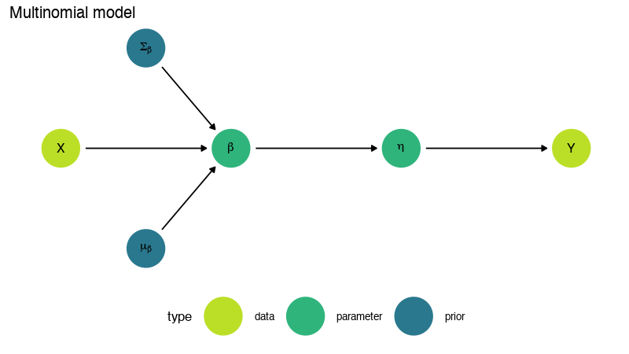
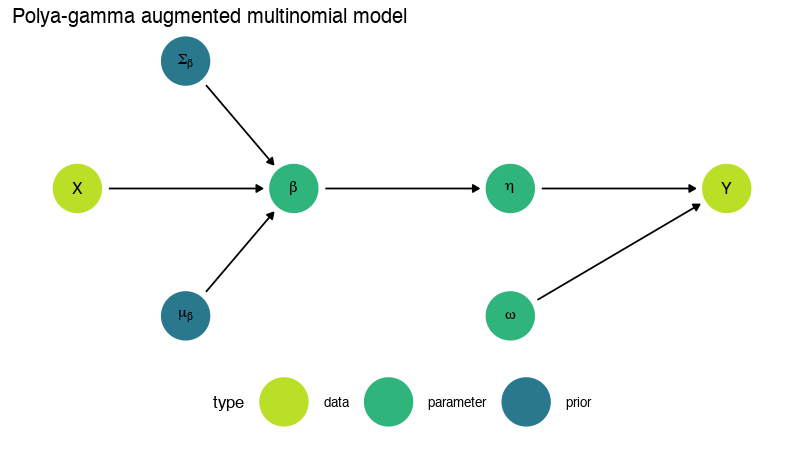
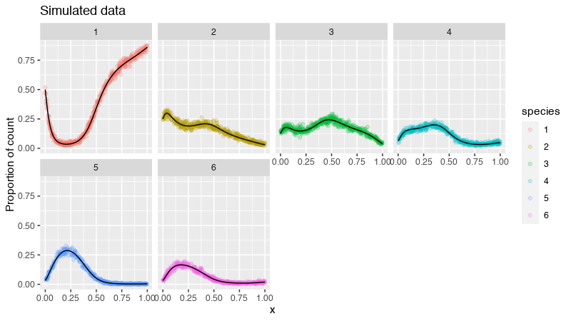
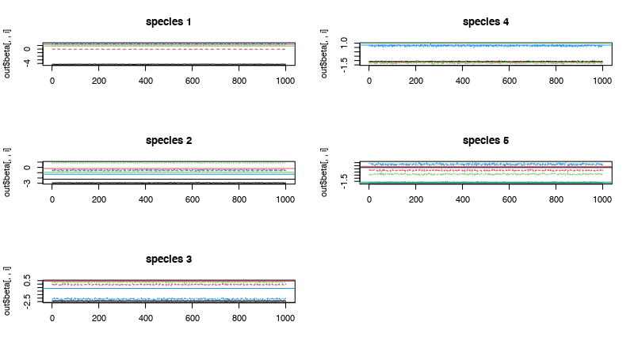
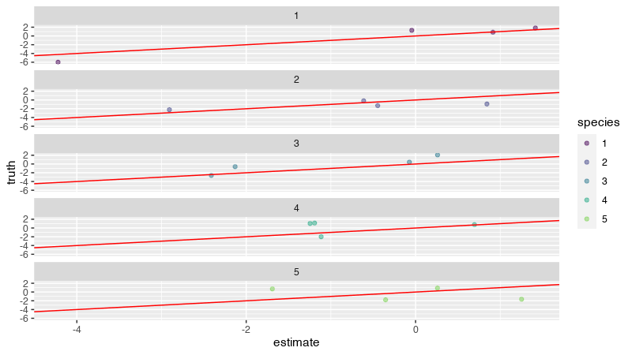
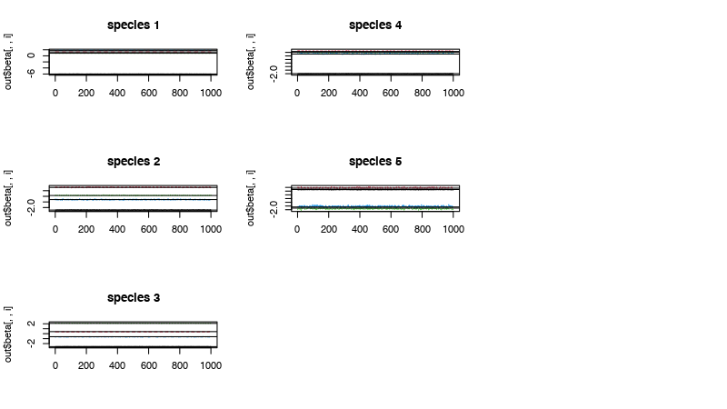
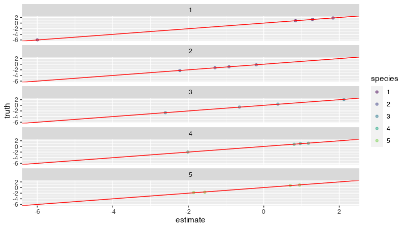

## ── Attaching packages ──────────────────────────── tidyverse 1.3.0 ──## ✓ ggplot2 3.3.3 ✓ purrr 0.3.4
## ✓ tibble 3.0.6 ✓ dplyr 1.0.3
## ✓ tidyr 1.1.2 ✓ forcats 0.5.1
## ✓ readr 1.4.0## ── Conflicts ─────────────────────────────── tidyverse_conflicts() ──
## x dplyr::all_equal() masks filesstrings::all_equal()
## x dplyr::filter() masks stats::filter()
## x purrr::is_null() masks testthat::is_null()
## x dplyr::lag() masks stats::lag()
## x dplyr::matches() masks tidyr::matches(), testthat::matches()##
## Attaching package: 'ggdag'## The following object is masked from 'package:stats':
##
## filter
library(cowplot)##
## Attaching package: 'cowplot'## The following object is masked from 'package:patchwork':
##
## align_plotsThis vignette demonstrates how to perform multinomial regression using the function pg_lm().
Let \(\mathbf{y}_i = (y_{i, 1}, \ldots, y_{i, J})'\) be a \(J\)-dimensional vector of counts where \(M_i = \sum_{j=1}^J y_{ij}\) is the total count and \(\boldsymbol{\pi}_i = ( \pi_{i, 1}, \ldots, \pi_{i, J})'\) is a vector of probabilities with \(\sum_{j=1}^J \pi_{i, j} = 1\). Then, the likelihood of \(\mathbf{y}_i\) is given by
\[\begin{align} [\mathbf{y}_i | M_i, \boldsymbol{\pi}_i] & = \frac{M_i!} {\prod_{j=1}^J y_{i, j}!} \pi_{i1}^{y_{i, 1}} \cdots \pi_{iJ}^{y_{i, J}} (\#eq:multinomial) \end{align}\]
The canonical multinomial regression uses a soft-max link function where the \(J\)-dimensional probabilities are modeled in \(\mathcal{R}^{J-1}\) with \(J-1\) dimensional relative to a fixed reference category. Assigning latent variables \(\boldsymbol{\eta}_i = (\eta_{i, 1}, \ldots, \eta_{i, J-1})'\) the softmax (multi-logit) function for \(j = 1, \ldots, J-1\) is
\[\begin{align*} \pi_{ij} = \frac{e^{\eta_{ij}}} {1 + \sum_{j=1}^{J-1} e^{\eta_{ij}}} \end{align*}\]
where this can be interpreted in an \(\mathcal{R}^{J}\) dimensional space with \(\eta_{i,J} \equiv 0\). Multinomial regression assumes that given an \(N \times q\)-dimensional design matrix \(\mathbf{X}\) for \(j = 1, \ldots, J-1\), the latent parameter \(\eta_{i, j} = \mathbf{X}_i \boldsymbol{\beta}_j\). After assigning each \(j = 1, \ldots, J-1\) a \(\operatorname{N}(\boldsymbol{\mu}_\beta, \boldsymbol{\Sigma}_\beta)\) prior, the posterior distribution is
\[\begin{align*} [\boldsymbol{\beta} | \mathbf{y}] & \propto \prod_{i=1}^N [\mathbf{y}_i | \boldsymbol{\beta}] \prod_{j=1}^{J-1} [\boldsymbol{\beta}_j]. \end{align*}\]
The difficulty in evaluating the above posterior is that the distribution is not available in closed form and sampling requires a Metropolis-Hastings update (or some other non-conjugate sampler). This motivates the following data augmentation scheme.
## Warning in is.na(x): is.na() applied to non-(list or vector) of type
## 'expression'
We can re-write the multinomial distribution in @ref(eq:multinomial) as a recursive product of \(J-1\) binomial distributions
\[\begin{align*} [\mathbf{y}_i | M_i, \boldsymbol{\pi}_i] & = \operatorname{Mult} \left(M_i, \pi_i \right) \\ & = \prod_{j=1}^{J-1} \operatorname{Binomial} \left( y_{i,j} \middle| \widetilde{M}_{i, j}, \widetilde{\pi}_{i, j} \right) \\ & = \prod_{j=1}^{J-1} \binom{\widetilde{M}_{i, j}}{y_{i, j}} \widetilde{\pi}_{i, j}^{y_{i, j}} (1 - \widetilde{\pi}_{i, j})^{\widetilde{M}_{i, j} - y_{i, j}} \end{align*}\]
where
\[\begin{align*} \widetilde{M}_{i, j} & = \begin{cases} \widetilde{M}_{i, j} & \mbox{ if } j = 1 \\ \widetilde{M}_{i, j} - \sum_{k < j} y_{i, k} & \mbox{ if } 1 < j \leq J - 1 \end{cases} \end{align*}\]
and the transformed (conditional) probabilities \(\widetilde{\pi}_{i, j}\) recursively defined by
\[\begin{align*} \widetilde{\pi}_{i, j} & = \begin{cases} \pi_{i, 1} & \mbox{ if } j = 1 \\ \frac{\pi_{i, j}}{1 - \sum_{k < j} \pi_{i, k}} & \mbox{ if } 1 < j \leq J - 1 \end{cases} \end{align*}\]
where the stick-breaking transformation \(\pi_{SB} \left( \boldsymbol{\eta}_{i} \right)\) maps the \(J-1\) dimensional vector \(\boldsymbol{\eta}_i\) over \(\mathcal{R}^{J-1}\) to the \(J\)-dimensional unit simplex by
\[\begin{align*} \pi_{SB} \left( \eta_{i, j} \right) = \frac{e^{ \eta_{i, j}} }{ \prod_{k \leq j} 1 + e^{ \eta_{i, j} } }. \end{align*}\]
The key idea for the Pólya-gamma data augmentation is that the multinomial likelihood can be written as
\[\begin{align} [\mathbf{y}_i | \boldsymbol{\eta}_i] & = \prod_{j=1}^{J-1} \binom{\widetilde{M}_{i, j}}{y_{i, j}} \widetilde{\pi}_{i, j}^{y_{i, j}} (1 - \widetilde{\pi}_{i, j})^{\widetilde{M}_{i, j} - y_{i, j}} \nonumber \\ & \propto \prod_{j=1}^{J-1}\frac{ (e^{\eta_{i,j}})^{a_{i, j}} }{(1 + e^{\eta_{i,j}})^{b_{i, j}}} (\#eq:likelihood) \end{align}\]
where \(\widetilde{\pi_{i,j}} = \frac{e^{\eta_{i,j}}}{1 + e^{\eta_{i,j}}}\) for some latent variable \(\eta_{i, j}\) on the real line, \(a_{i, j} = y_{i, j}\), and \(b_{i, j} = \widetilde{M_{i, j}}\). Then, applying the identity [@polson2013bayesian]
\[\begin{align} \frac{\left( e^{\eta_{i, j}} \right)^{y_{i, j}} }{ \left( 1 + e^{\eta_{i, j}} \right)^{\widetilde{M}_{i, j} }} & = 2^{-\widetilde{M}_{i, j}} e^{\kappa_{i, j} \eta_{i, j}} \int_0^\infty e^{- \omega_{i, j} \eta_{i, j}^2 / 2} \left[\omega_{i, j} | \widetilde{M}_{i, j}, 0 \right] \,d\omega_{i, j} (\#eq:pg-identity) \end{align}\]
where \(\kappa \left( y_{i, j} \right) = y_{i, j} - \widetilde{M}_{i, j} / 2\). Equation @ref(eq:pg-identity) allows for the expression of the likelihood in @ref(eq:likelihood) as an infinite convolution over the density \(\left[\omega_{i, j} | \widetilde{M}_{i, j}, 0 \right]\) which is the probability density function of a Pólya-gamma random variable \(\operatorname{PG} \left(\widetilde{M}_{i, j}, 0 \right)\) and a component \(e^{- \omega_{i, j} \eta_{i, j}^2 / 2}\) which is proportional to the kernel of a Gaussian density with precision \(\omega_{i, j}\). We make the assumption that for all \(i\) and \(j\), \(\omega_{i, j} \stackrel{iid}{\sim} \operatorname{PG} \left(\widetilde{M}_{i, j}, 0 \right)\) Therefore, we can express a multinomial likelihood as an infinite convolution of a Gaussian random variable with a Pólya-gamma density. After defining a prior \([\boldsymbol{\eta}] = \prod_{i=1}^N \prod_{j=1}^{J-1} [\eta_{i, j} | \boldsymbol{\eta}_{-i, -j}]\) where \(\boldsymbol{\eta}_{-i, -j}\) is all of the elements of \(\boldsymbol{\eta}\) except the \(ij\)th element, we can write the joint distribution \([\mathbf{y}, \boldsymbol{\eta}]\) as
Work on this notation \[\begin{align} [\mathbf{y}, \boldsymbol{\eta}] & \propto \prod_{i=1}^N \prod_{j=1}^{J-1}\frac{ (e^{\eta_{i,j}})^{y_{i, j}} }{(1 + e^{\eta_{i,j}})^{\widetilde{M}_{i, j}}} [\boldsymbol{\eta}] \nonumber \\ & \propto \prod_{i=1}^N \prod_{j=1}^{J-1} 2^{-\widetilde{M}_{i, j}} e^{\kappa(y_{i, j}) \eta_{i, j}} \int_0^\infty e^{- \omega_{i, j} \eta_{i, j}^2 / 2} \left[\omega_{i, j} | \widetilde{M}_{i, j}, 0 \right] \,d\omega_{i, j} [\boldsymbol{\eta}] \nonumber \\ & \propto \prod_{i=1}^N \prod_{j=1}^{J-1} \int_0^\infty [\eta_{i, j} | \boldsymbol{\eta}_{-i,-j}] 2^{-\widetilde{M}_{i, j}} e^{\kappa(y_{i, j}) \eta_{i, j}} e^{- \omega_{i, j} \eta_{i, j}^2 / 2} \left[\omega_{i, j} | \widetilde{M}_{i, j}, 0 \right] \,d\omega_{i, j} \nonumber \\ & \propto \prod_{i=1}^N \prod_{j=1}^{J-1} \int_0^\infty [\mathbf{y}, \eta_{i, j}, \omega_{i, j} | \boldsymbol{\eta}_{i, j}] \,d\omega_{i, j} \nonumber \\ & \propto \int_0^\infty [\mathbf{y}, \boldsymbol{\eta}, \boldsymbol{\omega}] \,d\boldsymbol{\omega} (\#eq:da) \end{align}\]
where \([\mathbf{y}, \boldsymbol{\eta}, \boldsymbol{\omega}]\) is a joint density over the data augmented likelihood. When the prior on \(\boldsymbol{\eta}\) is Gaussian, the marginal density \([\boldsymbol{\eta} | \mathbf{y}, \boldsymbol{\omega}] \propto \prod_{i=1}^N \prod_{j=1}^{J-1} e^{\kappa(y_{i, j}) \eta_{i, j}} e^{- \omega_{i, j} \eta_{i, j}^2 / 2} [\boldsymbol{\eta}]\) induced by the integrand in @ref(eq:da) is also Gaussian. In addition, the exponential tilting property of the Pólya-gamma distribution [@polson2013bayesian] gives the conditional distribtuion
\[\begin{align*} [\omega_{i, j} | \mathbf{y}, \boldsymbol{\eta}] & \sim \operatorname{PG}(\widetilde{M}_{i, j}, \eta_{i, j}) \end{align*}\]
To perform regression on the multinomial vector given an \(N \times q\) design matrix \(\mathbf{X}\), we assume that \(\eta_{i j} = \mathbf{X}_i \boldsymbol{\beta}_j\) and \(\boldsymbol{\beta}_j \sim \operatorname{N}(\boldsymbol{\mu}_\beta, \boldsymbol{\Sigma}_\beta)\).
Defining \(\boldsymbol{\Omega}_i = \operatorname{diag}(\omega_{i, 1}, \ldots, \omega_{i, J-1})\), we can calculate the full conditional distributions.
## Warning in is.na(x): is.na() applied to non-(list or vector) of type
## 'expression'
To explore the performance of the model, we start by simulating some data to test the model performance. The pgR function eta_to_pi() transforms the latent intensity variable eta to a sum-to-one probability pi using a stick-breaking transformation.
set.seed(11)
N <- 5000
J <- 6
X <- runif(N)
df <- 4
Xbs <- bs(X, df)
beta <- matrix(rnorm((J-1) * df), df, (J-1))
## make the intercepts smaller to reduce stochastic ordering effect
beta[1, ] <- beta[1, ] - seq(from = 4, to = 0, length.out = J - 1)
eta <- Xbs %*% beta
pi <- eta_to_pi(eta)
Y <- matrix(0, N, J)
for (i in 1:N) {
Y[i, ] <- rmultinom(1, 500, pi[i, ])
}To plot the simulate data, the count data is first transformed to proportional data with counts_to_proportions() so that the observations can be plotted on a common scale
Y_prop <- counts_to_proportions(Y)
dat <- data.frame(
y = c(Y_prop),
x = X,
species = factor(rep(1:J, each = N))
)
dat_truth <- data.frame(
y = c(pi),
x = X,
species = factor(rep(1:J, each = N)))
dat %>%
group_by(species) %>%
sample_n(pmin(nrow(Y), 500)) %>%
ggplot(aes(y = y, x = x, group = species, color = species)) +
geom_point(alpha = 0.2) +
ylab("Proportion of count") +
geom_line(data = dat_truth, aes(y = y, x = x, group = species), color = "black", lwd = 0.5) +
facet_wrap(~ species, ncol = 4) +
ggtitle("Simulated data")
If \(\widetilde{M}_{i, j} = 0\), then \(\omega_{i, j} | \mathbf{y}, \boldsymbol{\beta} \equiv 0\). Otherwise, for \(\widetilde{M}_{i, j} > 0\), we have
\[\begin{align*} \omega_{i, j} | \mathbf{y}, \boldsymbol{\beta} & \propto \frac{e^{- \frac{1}{2} \omega_{i, j} \mathbf{x}_i' \boldsymbol{\beta}_j}[\omega_{i, j}]}{\int_{0}^{\infty} e^{- \frac{1}{2} \omega_{i, j} \mathbf{x}_i' \boldsymbol{\beta}_j}[\omega_{i, j}] \,d\omega_{i, j}} %\operatorname{N} \left( \mathbf{y}_{i} | \boldsymbol{\Omega}_i^{-1} \kappa \left( \mathbf{y}_{i} \right), \boldsymbol{\Omega}_i^{-1} \right) \operatorname{N} \left( \boldsymbol{\beta}_{\cdot, j} | \boldsymbol{\mu}_{\beta_j}, \boldsymbol{\Sigma}_{\beta_j} \right) \\ \end{align*}\]
which is \(\operatorname{PG} \left( \widetilde{M}_{i, j}, \eta_{i, j} \equiv \mathbf{x}_i' \boldsymbol{\beta}_j\right)\) by the exponential tilting property of the Pólya-gamma distribution.
## fit the model to verify parameters
params <- default_params()
params$n_adapt <- 500
params$n_mcmc <- 1000
params$n_message <- 50
params$n_thin <- 1
priors <- default_priors_pg_lm(Y, Xbs)
inits <- default_inits_pg_lm(Y, Xbs, priors)
if (file.exists(here::here("results", "pg_lm.RData"))) {
load(here::here("results", "pg_lm.RData"))
} else {
start <- Sys.time()
out <- pg_lm(Y, as.matrix(Xbs), params, priors, n_cores = 6L, sample_rmvn = FALSE)
stop <- Sys.time()
runtime <- stop - start
save(out, runtime, file = here::here("results", "pg_lm.RData"))
}
layout(matrix(1:6, 3, 2))
for (i in 1:6) {
matplot(out$beta[, , i], type = 'l', main = paste("species", i))
abline(h = beta[, i], col = 1:nrow(beta))
}## Error in out$beta[, , i]: subscript out of bounds The model runtime was 3.61785566806793
## plot beta estimates
dat_plot <- data.frame(
beta = c(
c(apply(out$beta, c(2, 3), mean)),
c(beta)
),
type = rep(c("estimate", "truth"), each = (J-1) * ncol(Xbs)),
species = factor(rep(1:(J-1), each = ncol(Xbs))),
knots = 1:ncol(Xbs)
)
dat_plot %>%
pivot_wider(names_from = type, values_from = beta) %>%
ggplot(aes(x = estimate, y = truth, color = species)) +
scale_color_viridis_d(begin = 0, end = 0.8) +
geom_point(alpha = 0.5) +
facet_wrap(~ species, nrow = 8) +
geom_abline(intercept = 0, slope = 1, col = "red")
set.seed(44)
## subsample the simulated data
n <- 2000
s <- sample(N, n)
Y_s <- Y[s, ]
Y_oos <- Y[-s, ]
Xbs_s <- Xbs[s, ]
Xbs_oos <- Xbs[-s, ]
eta_s <- eta[s, ]
eta_oos <- eta[-s, ]
pi_s <- pi[s, ]
pi_oos <- pi[-s, ]
## fit the model to verify parameters
params <- default_params()
params$n_adapt <- 500
params$n_mcmc <- 1000
params$n_message <- 50
params$n_thin <- 1
priors <- default_priors_pg_lm(Y_s, Xbs_s)
inits <- default_inits_pg_lm(Y_s, Xbs_s, priors)
if (file.exists(here::here("results", "pg_lm-sample.RData"))) {
load(here::here("results", "pg_lm-sample.RData"))
} else {
## need to parallelize the polya-gamma random variables
## can I do this efficiently using openMP?
## Q: faster to parallelize using openMP or foreach?
start <- Sys.time()
out <- pg_lm(Y_s, as.matrix(Xbs_s), params, priors, n_cores = 6L, sample_rmvn = FALSE)
stop <- Sys.time()
runtime <- stop - start
save(out, runtime, file = here::here("results", "pg_lm-sample.RData"))
}
layout(matrix(1:9, 3, 3))
for (i in 1:9) {
matplot(out$beta[, , i], type = 'l', main = paste("species", i))
abline(h = beta[, i])
}## Error in out$beta[, , i]: subscript out of bounds
The model runtime was 12.5134330670039
## plot beta estimates
dat_plot <- data.frame(
beta = c(
c(apply(out$beta, c(2, 3), mean)),
c(beta)
),
type = rep(c("estimate", "truth"), each = (J-1) * ncol(Xbs)),
species = factor(rep(1:(J-1), each = ncol(Xbs))),
knots = 1:ncol(Xbs)
)
dat_plot %>%
pivot_wider(names_from = type, values_from = beta) %>%
ggplot(aes(x = estimate, y = truth, color = species)) +
scale_color_viridis_d(begin = 0, end = 0.8) +
geom_point(alpha = 0.5) +
facet_wrap(~ species, nrow = 8) +
geom_abline(intercept = 0, slope = 1, col = "red")
## predict from the model
preds <- predict_pg_lm(out, Xbs_oos)## Error in predict_pg_lm(out, Xbs_oos): THe MCMC object out must be of class pg_lm which is the output of the pg_lm() function.## Error in apply(preds$pi, c(2, 3), mean): object 'preds' not found
dat_pi_pred <- data.frame(
pi = c(
c(pi_oos),
c(pi_pred_mean)
),
type = rep(c("observed", "predicted"), each = J * (N-n)),
species = factor(rep(1:J, each = (N-n))),
obs = 1:(N-n)
)## Error in data.frame(pi = c(c(pi_oos), c(pi_pred_mean)), type = rep(c("observed", : object 'pi_pred_mean' not found
p_pi_pred <- dat_pi_pred %>%
pivot_wider(names_from = type, values_from = pi) %>%
ggplot(aes(x = observed, y = predicted, color = species)) +
scale_color_viridis_d(begin = 0, end = 0.8) +
geom_point(alpha = 0.5) +
facet_wrap(~ species, nrow = 5) +
geom_abline(intercept = 0, slope = 1, col = "red") +
ggtitle("Predicted vs simulated latent probability pi")## Error in pivot_wider(., names_from = type, values_from = pi): object 'dat_pi_pred' not found## Error in apply(preds$eta, c(2, 3), mean): object 'preds' not found
dat_eta_pred <- data.frame(
eta = c(
c(eta_oos),
c(eta_pred_mean)
),
type = rep(c("observed", "predicted"), each = (J-1) * (N-n)),
species = factor(rep(1:(J-1), each = (N-n))),
obs = 1:(N-n)
)## Error in data.frame(eta = c(c(eta_oos), c(eta_pred_mean)), type = rep(c("observed", : object 'eta_pred_mean' not found
p_eta_pred <- dat_eta_pred %>%
pivot_wider(names_from = type, values_from = eta) %>%
ggplot(aes(x = observed, y = predicted, color = species)) +
scale_color_viridis_d(begin = 0, end = 0.8) +
geom_point(alpha = 0.5) +
facet_wrap(~ species, nrow = 5) +
geom_abline(intercept = 0, slope = 1, col = "red") +
ggtitle("Predicted vs simulated latent intensity eta")## Error in pivot_wider(., names_from = type, values_from = eta): object 'dat_eta_pred' not found
p_pi_pred + p_eta_pred## Error in eval(expr, envir, enclos): object 'p_pi_pred' not found
params <- default_params()
params$n_adapt <- 100
params$n_mcmc <- 100
params$n_message <- 50
params$n_thin <- 1
priors <- default_priors_pg_lm(Y, Xbs)
inits <- default_inits_pg_lm(Y, Xbs, priors)
# check_inits_pg_lm(Y, Xbs, params, inits)
if (file.exists(here::here("results", "timings-pg_lm.RData"))) {
load(here::here("results", "timings-pg_lm.RData"))
} else {
## need to parallelize the polya-gamma random variables
## can I do this efficiently using openMP?
## Q: faster to parallelize using openMP or foreach?
time_8 <- system.time(
out <- pg_lm(Y, as.matrix(Xbs), params, priors, n_cores = 8L, sample_rmvn = FALSE)
)
time_6 <- system.time(
out <- pg_lm(Y, as.matrix(Xbs), params, priors, n_cores = 6L, sample_rmvn = FALSE)
)
time_4 <- system.time(
out <- pg_lm(Y, as.matrix(Xbs), params, priors, n_cores = 4L, sample_rmvn = FALSE)
)
time_2 <- system.time(
out <- pg_lm(Y, as.matrix(Xbs), params, priors, n_cores = 2L, sample_rmvn = FALSE)
)
time_1 <- system.time(
out <- pg_lm(Y, as.matrix(Xbs), params, priors, n_cores = 1L, sample_rmvn = FALSE)
)
save(time_1, time_2, time_4, time_6, time_8, file = here::here("results", "timings-pg_lm.RData"))
}
## Note: a large amount of computation time is not parallel -- sampling of the beta variable
## need to figure out why the faster comptuation version is giving issues
knitr::kable(
rbind(
time_1,
time_2,
time_4,
time_6,
time_8
)
)